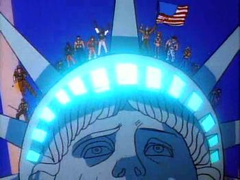
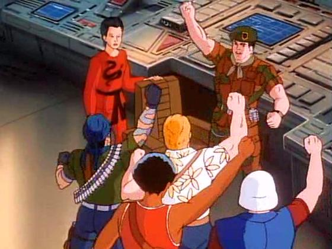

Click the image to watch on YouTube
Home GI Joe Cobra Cobra-La Choose your side Yo JOE
G.I. Joe is an elite international military task force made up of the best soldiers, pilots, spies, medics, and tech experts in the world.

"Yo Joe!"
| Character | Role / Description |
|---|---|
| Low Light | A calm and disciplined sniper who provides precise long-range support |
| Spirit | A skilled tracker and wilderness survivalist with a deep connection to nature |
| Barbecue | The team's firefighter and rescue specialist, known for his bravery in dangerous situations |
| Doc | The team's medic, responsible for providing medical care and first aid to injured team members |
| Flint | A charismatic and resourceful field leader, often taking charge during missions |
| Lady Jaye | An intelligent and skilled covert operative, adept at espionage and infiltration |
| Shipwreck | A sailor and amphibious assault specialist, known for his nautical expertise and humor |
| Alpine | A mountaineer and cold-weather specialist, skilled in navigating and surviving in harsh terrains |
| Clutch | A tough and reliable vehicle driver, known for his skills in operating various military vehicles |
| Roadblock | The team's heavy weapons specialist, known for his strength and expertise with large firearms |
| Snake Eyes | A silent and mysterious ninja commando, highly skilled in martial arts and stealth operations |
| Storm Shadow | A complex character, initially a Cobra operative but later revealed to have a deeper connection to Snake Eyes |
| Law | A tough and determined police officer who joins the G.I. Joe team to fight against Cobra |
| Lt. Falcon | A young and eager recruit who joins the G.I. Joe team, determined to prove himself in battle |
| Duke | The leader of the G.I. Joe team, known for his courage and strategic mind |
| Scarlett | A highly skilled intelligence officer and martial artist, known for her sharp mind and combat abilities |
| Wet-Suit | A stealthy and agile operative, known for his ability to infiltrate and extract information from enemy territory |
| Gung Ho | A fearless and aggressive marine, known for his strength and combat skills |
| Mainframe | The team's computer expert, responsible for hacking and technical operations |
| Dial-Tone | The team's communications expert, responsible for maintaining secure communication channels |
| Lift-Ticket | A skilled pilot and aircraft operator, known for his ability to navigate and operate various aircraft |
| Snow Job | A cold-weather specialist and ski expert, known for his ability to operate in snowy and icy conditions |
| Beach Head | A beach and coastal assault specialist, known for his ability to operate in marine environments |
| Tunnel Rat | A skilled tunneling specialist, known for his ability to dig and navigate underground passages |
| General Hawk | The commanding officer of the G.I. Joe team, known for his strategic mind and leadership skills |
| Slip Stream | A stealthy and agile operative, known for his ability to infiltrate and extract information from enemy territory |
| Bazooka | A skilled explosives expert, known for his ability to use and deploy various types of ordnance |
| Leatherneck | A tough and resilient soldier, known for his ability to withstand harsh conditions and combat situations |
| Red Dog | A loyal member of Slaughter’s Marauders and elite infantry unit |
| Heather O’Connell | A civilian nurse who assists the Joes with medical support. |
| Chuckles | A humorous and lighthearted member of the team, known for his ability to lift spirits and provide comic relief |
| SGT Slaughter | A tough and determined soldier, known for his leadership and combat skills |
| Wild Bill | A skilled marksman and sharpshooter, known for his accuracy and precision in combat situations |
Click the image to watch on YouTube
Copyright © 2026 Contact US